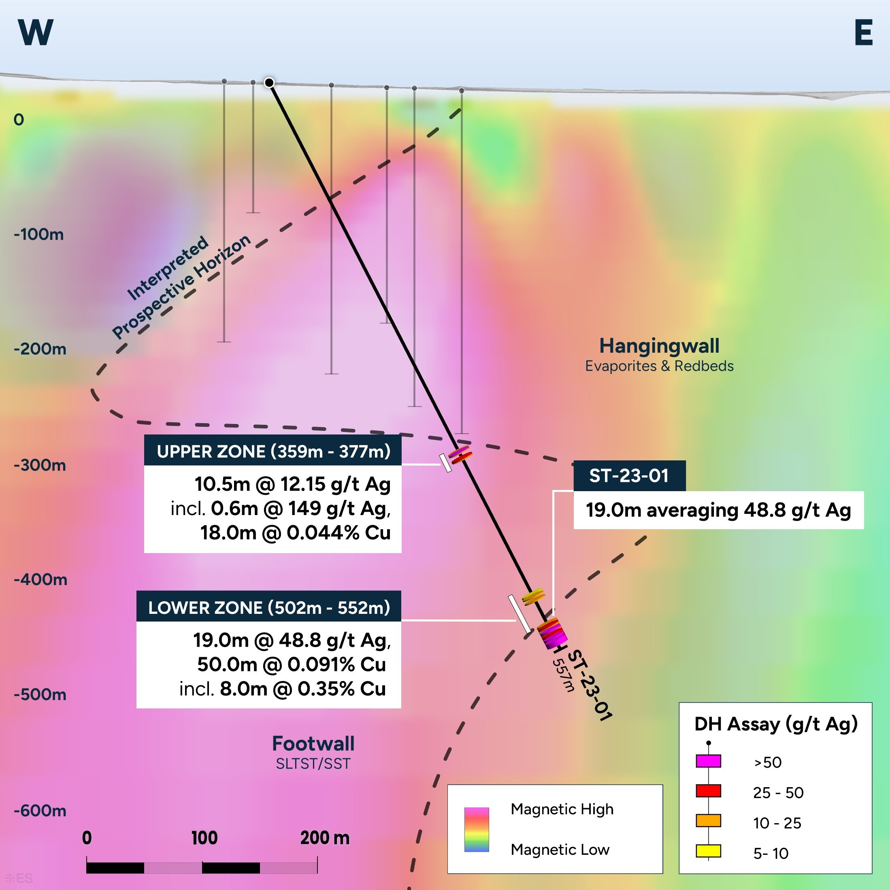
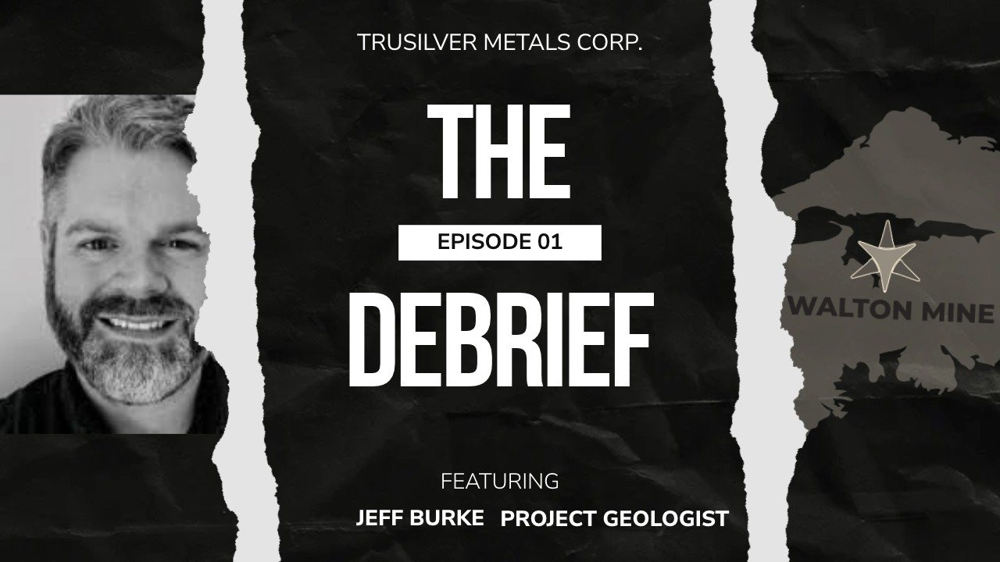

The Geologist
Jim didn’t fly in… He married in.

Jim Michaelis is a northern Ontario boy who came to Hants County as a second-year geology student, one of about 20 on a Gulf Minerals exploration program.1
Gulf was on the scene because the Walton mine looked a lot like deposits being found in Ireland at the time, where several new mines were opening. The pit was already dry by then, and the head frame stood off to his left.
He ended up mapping the whole area and compiling every piece of data Gulf had on it.
He also met his wife here. Decades prior, her father had worked at the Walton mine.5 Jim still has a piece of galena from the bottom of the old workings, one his father-in-law brought home. He spent years at that family’s table listening to the men who’d been underground talk about the workings.
When Gulf wound down, most of the young geologists left for the west. Jim stayed.
He went offshore for oil and gas. He logged Meguma gold core through the flow-through boom of the late 1980s. And when geology jobs disappeared, he spent 19 years in provincial government information technology (IT), ending as an enterprise architect.
The IT years are why Jim’s model exists. On his lunch hours he read the old assessment reports on microfilm in the archives. And he learned to build data systems, which is exactly what most exploration companies can’t do with a geophysical survey once they’ve paid for it.
2007
He found the rock, but somebody else already held the ground.
This is some of the hardest ground in the world to prospect. Glacial cover runs up to 50 metres deep.
In January 2007, Jim was prospecting a new road cut where the cover thinned out. He recognized what he was looking at: mildly mineralized Macumber Formation, the unit that hosts the silver at Walton, well off the main trend and in a spot the old maps said it shouldn’t be.2
He went home to stake it. But by then a promoter-led group had already blanket-staked all over the province, including this ground. When he approached them, they didn’t take him seriously.
“I cried in my beer for quite a while after that.”
He waited them out.
The group that brushed him off folded not long after. Their claims kept the ground tied up for about eight years anyway. Jim’s thesis outlasted both.
The Model
Built on a budget, tested with a drill.
When the ground came open, there was no money for a conventional airborne survey. A drone-borne magnetic survey could cover a lot of ground for about $40,000, so that’s what flew. It was the only way forward Jim could afford, and he took it.
Nobody drew a salary. Every dollar went into exploration.
All the while, Jim watched companies with assets in South America spend half a million dollars on geophysics and get nothing from it, all because the person reading the data didn’t understand the geology.
So he taught himself geophysics, and spent a lot of hours with an experienced Quebec geophysicist who showed him how to read the patterns in three dimensions (3D).
His rule for it: “Just because it’s showing a red dot on the map doesn’t mean a whole lot if you don’t put it in perspective.”
In 2021 we flew a high-resolution drone magnetic survey over the whole project.6 The 3D structural model that came out of it said the old Walton mine had worked a small offshoot of a much larger system, and that later geological events had likely turned the whole thing over.7
In 2023 we drilled one hole to test it. ST-23-001 intersected two mineralized zones on a lateral fold nose, supporting the structural interpretation.
Two intervals: 12.15 g/t silver over 10.5 metres, including 0.6 metres at 149 g/t, and 48.8 g/t silver over 19 metres. Copper ran 0.044% over 18 metres in the upper zone and 0.091% over 50 metres in the lower, including 8 metres at 0.35%.6
Jim’s summary of the difference between then and now: “Technology has advanced to the point where it’s no longer blind drilling the way it was in the past.”
Jim has his own read on the years that led up to that hole.
“How many discoveries are made by somebody hanging on by their fingernails?” says Jim. “Most of the good ones have not been made in the good times.”


The Problem
A geologist can’t list a company.
For most of those years the mine wasn’t on anyone’s list. In Jim’s words: “Most of the geologists in the province had forgotten about it.”
Even after the hole, nobody bit. When he did get a hearing, he heard the same two brush-offs. “But it’s in Nova Scotia.” Or, “Go drill a few more holes and come back.”
In his words: “I could sell this to a technical person in a heartbeat. I couldn’t sell it to the business people.”
He’d already shown he could wait out the claims. It turned out he could wait out the business side too.
So here are the business people.
The People Who Took The Call
They’d just done this once.
In 2025, with silver moving, William White called Jim asking if he knew of any good projects.
William and Penny White had co-founded Tiger Gold Corp.8 Rick Huang was its CFO and Corporate Secretary from January 2025 to July 2026, while Tiger Gold completed a qualifying transaction to list on the TSX Venture and raised more than $40 million.9
That’s the same path TruSilver is on now, run by the same three people, and Rick in particular has been involved in more than $100 million of financings over his career.9
Michael Gross, our President and CEO, had been working with Jim since the bootstrap years. He’s a surgeon by training, so he already thinks in three dimensions for a living. He’s also spent more than 20 years in business development, and he knows mining boards from the inside: past lead director at Linear Gold and Brigus Gold, and a director of Fortune Bay today.10
Penny is a securities lawyer with more than 25 years in capital markets and dozens of public-market transactions as counsel.8 William runs WCG Cap Partners, a family office that builds growth companies, including in resources.11
The Lead Director
The big fish who’s already commissioned a US$7 billion mine.
Peter Hancock is our Lead Director.3
He spent more than 30 years in mining, most of it with Glencore. He managed the Murrin Murrin nickel and cobalt operation in Western Australia. As President of Koniambo Nickel from 2011 to 2016, he led the completion, commissioning and ramp-up of the US$7 billion Koniambo mine in New Caledonia, one of the largest greenfield nickel projects in the world. Earlier, he oversaw operations at the Brunswick Smelter and led technology and business development for Noranda Zinc. He sits on the board of Sibanye Stillwater today.3
The Handoff
The man who takes it from here.
In September 2026 Matt Rees joined the board. Jim stays on as Strategic Technical Advisor.14
Rees spent more than eleven years at IAMGOLD, the last five as Chief Geologist, on a team that discovered or acquired roughly 29 million ounces of gold, including the Nelligan discovery in Quebec. Before that, seventeen years with Noranda-Falconbridge. He holds a Master of Science in geology and is a Professional Geoscientist registered in Ontario.14
Who Owns The Shares
Every share we held before this financing is locked.
At listing, 25,214,848 of our shares sit under escrow or voluntary three-year restrictions, and another 5,106,840 carry other trading restrictions.15
That leaves a public float of 12,222,990 shares out of 42,544,678 outstanding. Insiders hold 39%.15
Every share we held before this financing is in those locked numbers. Nobody who held a share before it can sell one for three years.4
The financing closed in September 2026 at C$2,510,090. About C$305,000 of it was our own directors and CFO buying alongside everyone else.14
The Honest Part
Here’s what a 45-year head start doesn’t buy.
Jim will tell you this himself: “We still have to make a discovery here. There are no guarantees. All we can do is our best.”
And if it works, he’ll tell you what kind of thing it is. High grade, relatively low tonnage. That means narrow, precise mining, and it’s why the silver grades matter more than the size of the footprint.
As of the time that you’re reading this, nothing on this page is a resource. We haven’t yet defined an ounce you can bank on. What we have is a model built by the person who knows this ground best, one hole that landed where the model said, a team that just listed and financed a company, and every pre-financing share locked.
In short
Why these people, on this ground.
- The geologist has 45 years on this system. He found the target rock in 2007, and the 2023 hole landed where his model said.1, 2, 6
- The people running the listing and the money did exactly this with Tiger Gold, through a qualifying transaction and more than $40 million in financings.9
- Every share held before this financing is escrowed or restricted.4
- The drill program now sits with a former IAMGOLD Chief Geologist, and the financing that pays for it closed in September 2026.14
Phase 1 is expanded geophysics and at least two drill holes into the target the 2023 hole opened up.12 Our Crown land exploration permit runs to March 2028.12
The method is the same one that got us here, one step at a time. After the first two holes we run downhole geophysics, which reads the rock about 150 metres out from each hole, then we refine the model before the next holes go in.13
When those holes go in, we’ll send the results to this list.